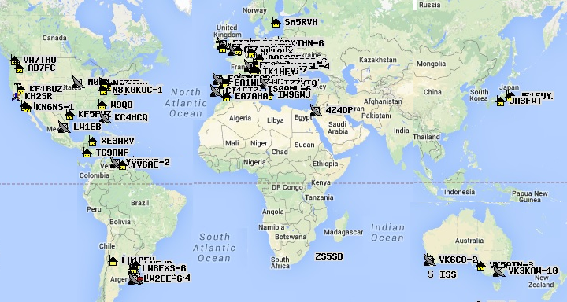

On the air in Annapolis: PSAT3 is now on permanent display in a glass case in our
satellite lab (until another launch opportunity comes along) and is on the air
so that its telemetry is available on line. Currerntly it is simulating 16 orbits per day with 4 in a row
simulating the solar panels in the shade of the rocket body.
See the downlinks of all APRS satellites: On this APRS.ORG/SATS.HTML page.
PSAT3 is a short fuse follow-on opportunity to duplicate the functionality of
PSAT2 but in a full size PPOD size payload that will remain attached to the upper stage rocket body.
Launch is expected from Kodiak Alaska in Mid March into a 450 km 98 degree orbit. We are a payload on the
DARPA Launch Challenge where neither the payloads nor the
launch provider were aware of each other until L-30 days. This is to stress test launch provider's ability to launch
on short term notice. 1st launch of the challenge is supposed to be 29 Feb! We are on the 2nd launch.
PSAT3 Mission: The mission of PSAT3 is the education of students in the satellite and radio art through the construction of
a viable spaceccraft or payload. For PSAT3, the operating mission is to provide a low-cost VHF telemetry command and control system that can also
also serve as a two-way packet data relay between amateur radio operators worldwide. These operators typically use expensive handheld and mobile
radios with built in AX.25 packet modems and displays. A secondary mission is a DTMF uplink with Voice downlink
to allow users with much less expensive radios to also
participate by sending their position and messages using simple DTMF tones (Touchtones (R)). Their tones are acknowledged by the
PSAT3 with a voice response and are also converted to a data packet on the APRS downlink for all other users to see.
The voice synthesizer can also speak APRS messages.
SSTV Camera Mission: Another secondary payload will be a small low resolution camera provided by students from Brno
University similar to what flew on PSAT2.
It can take images periodically or on demand on the APRS uplink.
Live Downlinks: PSAT3 will use standard APRS protocols to be compatible with the FINDU.com web site that captures
and catalogs all APRS packets in the world from the APRS-Internet stream. An example of the types of live data for PSAT3
(PSAT2 shown) are shown in the links below.
Notice FINDU even has plotting and telemetry unit conversion for the standard 5 channel APRS telemetry:
Downlink: 145.825 MHz 1200 baud packet, DTMF -to-Voice responses and SSTV.
PSAT3 and FCC: PSAT3 will be the first Student Amateur Satellite that has gone through the new
joint FCC/NTIA process for Federal students building an Amateur Satellite.
The project is an undergraduate student engineering project similar to all other projects
from engineering majors but having a 100% amateur mission for learning about satellites and the radio art.
It will be controlled in the Amateur Satellite Service by the licensed 3rd party control operator WB1HAI and used by
amateur radio operators around the world. But since it is being built by federal students, the federal involvement
in construction will be documented to the NTIA as well.
Polar Orbit: The orbit will have a 98 degree near-polar inclination and excellent visibility anywhere on Earth about every 12 hours.
The primary ground stations in the APRS network are as shown below with a two-day track.
It looks like there are only 5 out of 28 orbits every two days that we wont have ground coverage.
Control Operator: Following the IARU recommendations for Amateur Satellites,
our control operator is a licensed third party Ham with a non-pecuniary affilliation to the Academy
(retired senior division head) along with other designated volunter amateur ground stations around
the world who have controlled our previous amateur satellites, PCSAT, RAFT, PSAT, etc.
The Licensed control operator fully understands Amateur radio as well as the Academy and serves the
responsibility to assure that PSAT2 meets all the rules of the Amateur Satellite Service
while at the same time, he can also push back to the Academy should there be even the
slightest conflict of interest.
Structure: The structure is a PPOD like box with removable side panel inserts as shown here.
These panels will contain the solar cells on the outside and the various cubesat sized circuit boards on the inside.
For flight there are two battery panels, a panel for the antenna release mechanism and a panel with the three
card stack (SATT4 packet system, DTMF/voice board and the Attitude Dynamics board.
Operating Modes: PSAT2 consists of a number of exciting and unique Amateur Communications transponders as listed here:
Sister APRS Satellites: Other APRS transponder satellites on orbit or in work all share a common uplink,
a generic digipeter alias (APRSAT and ARISS) and a common downlink (145.825 MHz) so all user traffic appears on the live
APRS satellite downlink page and ISS downlink page.
The graphic below shows how the commonality of all this operaation integrates together with worldwide users and
the internet linked ground stations.
OTHERNET a global open satellite network on GEO satellites (was
OUTNET back in 2018)
The unique features of PSAT3 are a subset of the previous APRS satellite CONOPS image diagram at right.
THey are the
APRS transponder
and the new APRStt (TouchTone) DTMF/Voice transponder (which was prototyped on
PSAT2 which lets everyone do APRS using any radio with DTMF keypad,
not just those with APRS radios. There have been several iterations of the APRStt system in APRS over
the years since 2001, but this application will be new in space and will help introduce everyone
to this unique alternate APRS capability for use with ANY radio.
Read more about
APRStt. To use the spacecraft with your DTMF mobile or handheld
all you have to do is store your callsign in DTMF memory using this
DTMF Callsign Encoder. Then to send your grid,
you just send a DTMF memory. You can also send QSL's to other CQ,s and can
send any of the other 99 messages from other memories. Here are some examples of the Voice Response
to some of these DTMF uplinks:
You will notice the voice synthesizer on PSAT2 is much better than the one on QIKCOM-2.
Low Cost Comms Board: Another feature of these cubesats is our development of a standardized cubesat communications card
(shown below right) based on the popular
Byonics MTT4B all-in-one APRS Tiny-Track4 module.
We standardized the MTT4B onto a standard cubesat-104 board (and adding a 9600 baud UHF downlink if needed)
to allow other schools to rapidly develop their own amateur radio cubesat projects. We call this board the SATT4.
Download a copy of our draft SATT4 Documentation.
. .
Operations under ITU Rules: PSAT2 operates under the ITU rules of the Amateur Satellite Service.
See how PSAT2 design and operation fit entirely within the ITU International Amateur Radio
RULES. The FCC does not issue
licenses for Amateur Radio Spacecraft
(see public notice) because they are operated under the
license of the individual amateur radio operator who is responsible to assure
that both the design and operation are within the rules of the ITU as interpreted by the IARU. Our licensed control operator is Todd Bruner, WB1HAI in Annapolis.
PSAT3 Digipeater Aliases: To join the existing APRS satellites on orbit and operate as a seamless constellation,
PSAT2 supports the same APRSAT and ARISS generic aliases as the original
PCSAT (NO44)
PSAT and the
packet system on the ISS so that users do not have to change any parameters
when using any of these three APRS transponders.
APRStt GRID MAP Encoding: The map table below encodes the 99 grids that have 99.99% of the
worlds ham population into only 4 DTMF digits by converting
the first two letters into two digits from the 00-99 table.
You can see that our Maryland FM19 grid becomes 1819 in DTMF.
A table is also shown below that simpilfies finding your grid. Notice that three grids for Indonisa
OI, OJ, and PI
appear in the Canada, USA and Central America blocks. Our appologies for those grids
that did not make the cut into the top 99. We can try to accomodate special grids on request.
For example, we have assigned Hawaii's BL as "HI" and BK as "HH". Then by translating on the
ground on the
User DTMF page, we can translate back.
Other than your gridsquare, you only need to memorize the last four digit special code because your call is simply
spelled out with the letters on the keys.
DTMF Robustness: The combined 16 key combination is then stored in the DTMF memory of the users radio
so that it can be transmitted in a single 3 second burst. Since the entire code is self contained, is always 16 keys,
is sent at a standard speed, always begins and ends with known keys and all keys inbetween are decimal only,
then any other combinations will be ignored. Also the usual failure mode of
DTMF is duplication of digits or omission of digits which will be ignored by the mentioned constraints.
A successful uplink will be ACK-ed by voice since the DTMF user cannot see the APRS downlink.
Hint: The DTMF receiver is narrowband FM and the transmitting radio must have its modulation set to NFM.
Another point is that the hardest thing for a DTMF decoder to reconize is two of the same digits in a row, check
your own code. If there are no, or only a few dupicate digits in a row, then you might be able to select
fast DTMF on your radio (50 ms instead of 100 ms).
DTMF MESSAGES: The DTMF decoder will also accept an encoded standardized 2 digit message number (00 to 99)
to select any of the 99 preloaded messages on the spacecraft. These messages are the standard ARL radiograms
plus some other special ones (such as 40 for a QSO) for this satellite. To send one of these messages
in the same 16 key DTMF memory use the following format.
This is a 16 key DTMF string that begins with the "C" key to indicate a message,
and then a 2 digit message number and then a 2 digit modifier xx, followed by the above encoded CALLSIGN.
If the message is an actual ARL Emergency message, then the modifier should be 99 and the speech
will include the word "EMERGENCY". If the modifer is anything over 90, then it will not say Emergency but will say TEST.
If the modifier is less than 90, then the modifier will only be used if the template for that message
has a blank in it for insertion of the modifier.
The "C" DTMF key indicates a message.
The "MM" digits indicate the two digit message number, the "xx" digits are a numeric modifier that will replace any "_" blank in the messge text.
Then the remaining CCCCCCxxxx finish off the transmission with the full encoded callsign as in the grid format.. See the
Actual Flight list of messages and for background the standard
ARL radiograms and a copy of the
Maritime Emergency Codes that are also included.
Making a Contact: When you send your grid and call by DTMF the spacecraft will say "GRID FM19 from WB4APR, QSO number xx". The QSO number increments with each new station up to 99 and rolls over. To complete a contact with such a grid, send message number 40 (see above) with the QSO number xx. The spacecraft will say W3XYZ says message number 40 QSL your QSO number xx, my number is yy" to complete the contact. Of course, an APRS copy of each of these messages will also come down on the downlink for those with APRS radios. Since the QSO number will change with each contact, you can manually enter just Bxx and then hit another DTMF memory that has the remaining portion of the message and your call 40CCCCCCXXXX# to complete the QSO for a new QSO number. With practice you can do this rather quickly. Notice that this special "B" message format is slightly different from the "C" format in that the order of the MM message number and xx modifier are reversed so that you only have to manually enter the three keys "Bxx" to send this special QSL message.
LIVE Telemetry Downlink: will also be captured on Steve Dimse's, K4HG original
pcsat.findu.com web page. APRS packet is a secondary mission compared to DTMF and PSK31, so the digipeater may be turned off if power is low. But beacons, telemetry and Bulletins will always remain. The five Telemetry Equations (after the serial number) in standard APRS telemetry format are:
Format: . . . . . T#SSS, VVV, I I I, XXX, YYY, ZZZ, 00011X00
VVV. . . Bus Volts in hundredths
See the
Psat paper at the 2010 AMSAT symposium
APRS Packet Transponder: The APRS packet transponder
is an AX.25 Packet Radio Relay similar to what is flying on
PCsat and the
ISS. This ongoing mission in space on the original PCsat
is now over 12 years old and pioneered
this very popular operating mode via the ISS since 2006. Both of these
missions deliver packets to users worldwide via the global network of
volunteer ground stations feeding the two downlink capture pages:
psat.aprs.org and
ariss.net. These pages display live maps such as the one
below, of the most
recent user position data and capture all message traffic between users.
See the APRS link budgets. In addition there
is also a PSK31 transponder as noted below.

Unique Power System: Unlike the standard Silicon cells on PSAT1, PSAT3 uses the very expensive UTJ
multi-junction cells that cost 100 times more. But for the cost, these will deliver twice the power.
With three UTJ cells per series string, the peak solar voltage is 7.2 volts which is a perfect match to
a 5 cell NiCd battery shown below. The power per string is about 3.5 Watts, but with the rectangular spacecraft,
the power averages about 4 Watts in the sun when two or three surfaces all face the sun somewhat.
But in general, the average orbit power will be about half that when we reduce it for eclipses,
giving us about 2 Watts orbit average power. This is significanly reduced on this mission since the payload
is attached to a host and as many as 2 to 4 of the solar panel sides cannot see space. In this case,
we further cut the power budget down to about 1W average power until further analysis are possible.
.
Global Experimental Data Channel: PSAT3 is the next transponder in the space segment of this
initiative to encourage both new satellite construction in support of this experimental Amateur Radio
data channel and lower cost ground terminal experiments and
sensor experimentation at other schools as shown below.
Today, the only AMSAT that is available for
no cost to schools with such experiments are the Naval Academy's PCSAT and PSAT and the transponder on the ISS. But with
PSAT3 we hope to continue this ongoing full time presence in
space to continue this support of the 145.825 data uplink channel for future experiments.
To this end we hope other schools to either build additional 145.825 MHz relay satellites
and/or to build experimental sensors. The complete comms system including data
transponder fits on one 3.4 inch square card shown here.
We hope that PSAT3 will be the Egg in this
chicken-egg conundrum.
Historical Design Notes: Below are some descriptive images and links to the details of the PSAT2 design.
But until we finish the new PPOD version for PSAT3, we are retaining some of the olderlinks to the portions
of the original PSAT design that are similar.
Comprehensive list of Amateur Satellites and Frequencies: is on
JE9PEL's List.
Uplinks: . . 145.825 MHz narroband FM packet and 145.980 DTMF (when enabled)
User Station Configuration:

PCSAT (callsign W3ADO-1) in orbit since 2001 semi-operational
ARISS on the ISS since 2007
AISAT-1, India's first APRS satellite (Apr 2019).
PSAT Operational since May 2015
BRICSAT-1 launched with PSAT, but insufficient power budget
PSAT2 Launched June 2019 VHF packet died in August, but UHF PSK31 and SSTV still operational.
BRICSAT-2 APRS digi and thruster experiment in a sister 1.5U cubesat with PSAT2
ASTARS missions: Early 2 decades of APRS missions on other spacecraft, ISS, Shuttle and MIR

 . . .
. . .

 DTMF Callsign Encoding: PSAT3 (like PSAT2) also cleverly compresses a 6 character call into only 10 digits
following the 4 digit grid noted above. The first six digits of the call are the matching single keys for the
callsign letters, EG: 924227. The next 4 digits encode the 2 bit location of each of the 6 call letters on each
of the 6 keys used. For example, the 6 letters of WB4APR on the 6 keys are key locations 120112.
Since each location is between 0 and 3, they can be encoded in 2 bits each (powers of 4) and assembled left to right
into a 12 bit binary number. To convert to decimal, take the first 2 bits times 1024, the next 2 bits times 256,
the next 2 bits times 64, the next times 16, the next times 4 and the last 2 bits times 1. Then add them up and
get the 4 digit decimal "key code" (1558 in this example). This 4 digit decimal number we call your callsign key code.
For those that are 12-bit-challenged, Bob Wood WA7MXZ has written an
DTMF Callsign Encoder to do this 4 digit number for you. For shorter calls,
right-pad to 6 with spaces. A space is encoded as the "0" key with the key location code of 1.
The entire Grid and call report adds a "*" at the beginning and a "#" at the end for the full 16 DTMF key report.
DTMF Callsign Encoding: PSAT3 (like PSAT2) also cleverly compresses a 6 character call into only 10 digits
following the 4 digit grid noted above. The first six digits of the call are the matching single keys for the
callsign letters, EG: 924227. The next 4 digits encode the 2 bit location of each of the 6 call letters on each
of the 6 keys used. For example, the 6 letters of WB4APR on the 6 keys are key locations 120112.
Since each location is between 0 and 3, they can be encoded in 2 bits each (powers of 4) and assembled left to right
into a 12 bit binary number. To convert to decimal, take the first 2 bits times 1024, the next 2 bits times 256,
the next 2 bits times 64, the next times 16, the next times 4 and the last 2 bits times 1. Then add them up and
get the 4 digit decimal "key code" (1558 in this example). This 4 digit decimal number we call your callsign key code.
For those that are 12-bit-challenged, Bob Wood WA7MXZ has written an
DTMF Callsign Encoder to do this 4 digit number for you. For shorter calls,
right-pad to 6 with spaces. A space is encoded as the "0" key with the key location code of 1.
The entire Grid and call report adds a "*" at the beginning and a "#" at the end for the full 16 DTMF key report.
DTMF special reversed QSL Message Format: . . . Bxx40CCCCCCXXXX#
I I I . . . . Bus Current in mA
XXX. . . Temp +Z where T = -1.26E-6*X^3 +0.0028*X^2 -2.215*X + 625
YYY. . . Temp - Z where T = -1.26E-6*X^3 +0.0028*X^2 -2.215*X + 625
ZZZ . . . TempBat where T = -2.57E-6*X^3 +0.0061*X^2 -5.149*X +1475
In the 00011X00 field, only the X has meaning. 0 = DIGI ON, and 1 = Digi off

The image at right is the typical test equipment used during integration testing of a packet radio payload.
(In this case, PSAT in 2015).
{kind=link}
{kind=link}
{kind=link}
{kind=link}
{kind=link}
{kind=link}
{kind=link}
{kind=link}
{kind=link}
{kind=link}
{kind=link}